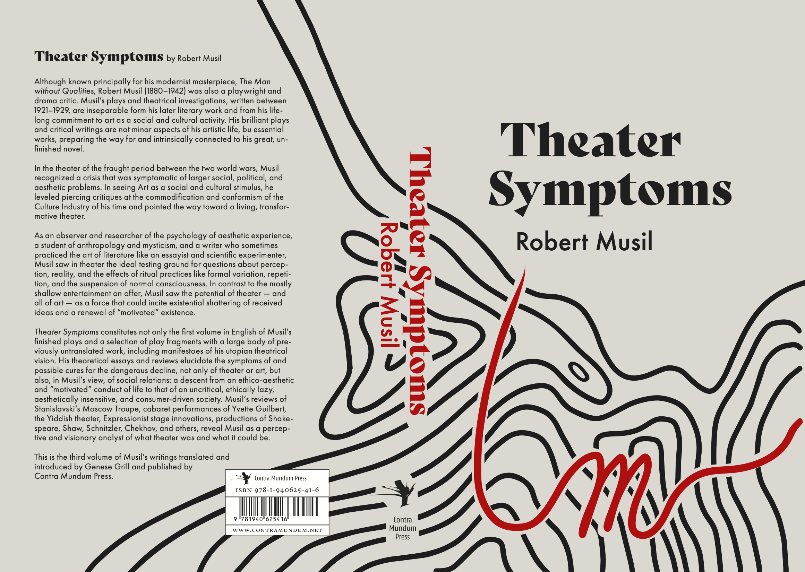
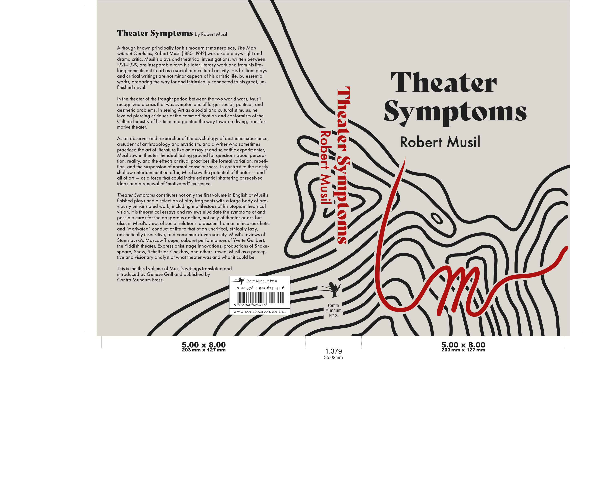
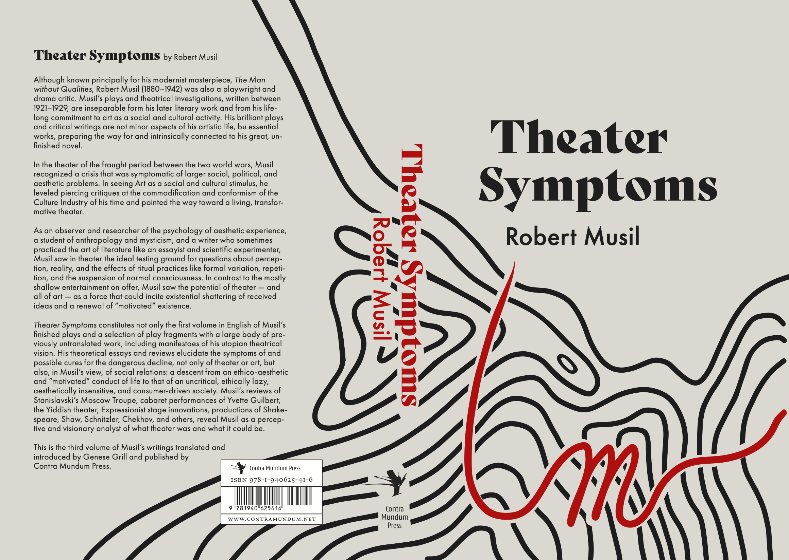
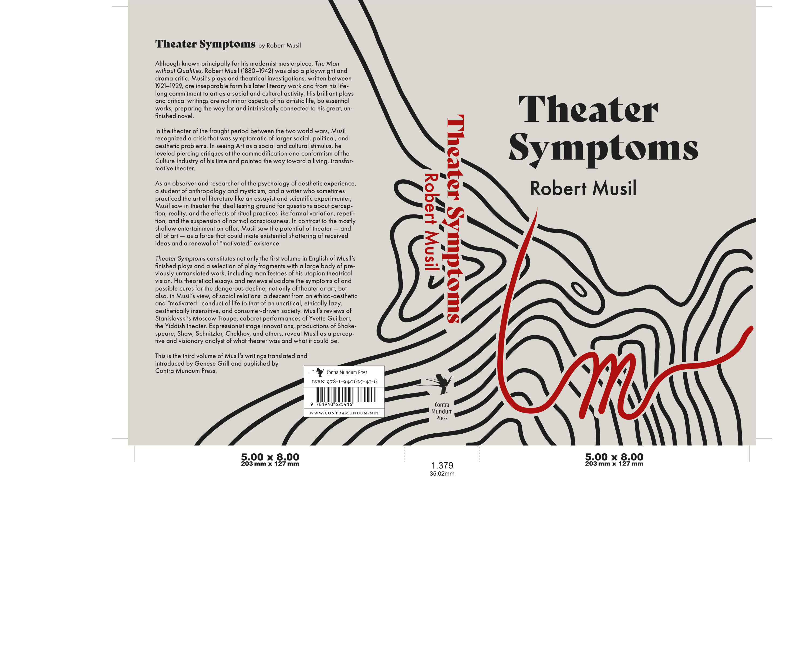

Robert Musil Book Cover
 




Robert Musil "Theater Symptoms" Book Cover design, 5" x 8"
Link to blog feature by English translator of novelWhen I first read the synopsis to "Theater Symptoms", I was intrigued by the unique and outspoken attitude that Robert Musil was said to have. His ability to stray from the norm was evidently different from most of his times. Musil spoke out against the decline of art, and even social relations, and he did so in an unequivocal manner. When thinking of design ideas to represent "Theater Symptoms", I wanted to depict Musil's candid personality-- his sarcasm and honesty during the uniformity of the World War. I came up with a few creative concepts, and I aimed to implement bold, outstanding elements in them to represent Musil's opposition to the outside world. I created a design with repeating black and white circles, where I added a bold yellow title. In another design, I drew multiple straight lines going from left to right and started to bend the lines, creating a certain discrepancy in the design.
The design I went with featured an array of repetitive, organic black lines. I added a bright red line in the midst of the black ones. After some comments and critiques, I ended up changing the design, and having the red line cut through all the black ones, exiting the page at the edge. The red line formed into the shape of a capital "M", for "Musil". The red line represented "cutting through" normalcy and repetition, as Musil strived for reformation in the art world (and social/ political issues) with a plain-spoken attitude. I cut the edge of the red line to a sharp point that fittingly "points" to the author text. I added a light beige background to add dullness, and to complement the monotone/repetitive lines. The red stroke stands out amongst the background, as Musil did. I used the Bely Display font for the title, as I wanted to represent a more traditional feel, as Musil lived and wrote during the World War. I paired the font with Futura, a modern sans serif font that is obviously different from that of the title. The two, I believe, pair well together, and the contemporary feel of Futura suits the author. The spine features the same fonts, this time in red, that once again cut through the black lines. In all, I hope that this concept can show through to the reader, or at least compel the viewer to open the book.